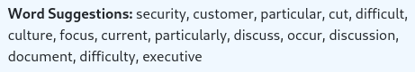
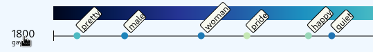
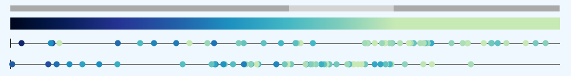

This project is a re-implementation of the visualization explored in the paper Interactive Analysis of Word Vector Embeddings.
These visualizations are providing more insights into word vector embeddings and allow the user to explore the development of terms across multiple vector embedding datasets (e.g. across a historical timeline).
In our implementation we are focusing on the Neigborhood Visualization found in the paper. We focused on functionality which allows a more dynamic way of exploring the data and gives the user a greater selection of tools and options for the data processing and visualization.
In addition this project does not require any backend for the data processing as all processing is done in the browser. However, this also meant that we had to focus on a collection of pre-selected word embedding datasets to reduce the amount of data.
We are using the "All English (1800s-1990s)" HistWords: Word Embeddings for Historical Text embeddings dataset created by Hamilton et al. To reduce the amount of data we only included ~2800 terms found in the New General Service List which aims to collect a set of the most important english words.
Once all datasets are downloaded the application can be used. Please find details on the provided functionality below.
For convenience a demo selection is provided showing the development of the term gay from 1800 to 1900 (also used in the reference implementation of the paper authors).
This demo can be loaded via "Load 'gay' demo".
The similarity scale increases from left (0.0) to right (1.0), from darker to brighter. The closer a term is to 1.0 (on the right side of the scale), the closer was the vector of that term to the reference vector (the selected term). This means these terms are more similar to each other in the trained word embedding.
What does a terms color mean? Be default (based on the reference implementation) a term is colored based on the similarity value of the same term in the next dataset. Because of that the last dataset is colored black. Any term which does exists in the current dataset but not in the next, is also colored black.
More options for coloring are available as seen below.
The Dataset section allows to add, remove and change the selected datasets and terms dynamically. The data will be automatically re-build in the background and the view will refresh as soon as the data is processed. The selection box shows all available datasets. To select a term type it in the input box. Please see Arithmetic for additional options in the term selection.
The Word Suggestions sections shows all terms which contain the substring currently typed. This allows the user to easily check if a term is available in the dataset or not. The random also helps with exploration.
The term input does not only allow single terms but also supports simple arithmetic functionality. Use + and - operators between terms to either add or subtract them from each other. The vector is L2 normalized before the nearest neighbors are searched and returned.
By default only n-nearest neighbors (selected by the "Neighbors" slider) data points are shown per dataset. Enabling "Extended Terms" will extend the data point selection with ALL terms found across all datasets. Even if these are not the nearest neighbors to the original vector. (This is the default in the reference implementation of the papers authors.)
To show a term and its similarity value in detail you can hover over the corresponding data point with the mouse pointer.
Hovering over the dataset name will show all visible terms of the datasets along the similarity axis.
The mousewheel allows to zoom on and out in the main view. While holding down the mouse pointer and dragging the data points can also be moved back and forth on the X-axis. The grey indicator bar above the color scale helps with orientating yourself on the similarity scale. 0 is to the left, 1 to the right. The light grey bar shows the area which is currently in focus.
Press "Auto Zoom" in the settings to quickly focus on all data points found across all datasets.
The Quantile setting allows to select one of 4 variants. The 25% quantile, the 50% quantile (median) and the 75% quantile. In addition it shows the "Q2" quantile used in the reference implementation. However in the reference implementation it appears this setting just shows the nearest neigbor from the (not-extended) terms. It does not use statistical values from the dataset.
The 25%, 50% and 75% quantiles are computed across the whole dataset.
The value is indicated for each dataset by a grey bar in the background. Select None to hide.
When clicking on a dataset name the dataset will be selected (red). All datapoints of the selected dataset will be sequentially colored and a terms color is used as a reference for the color of the same term in all other datasets. If another term is not included in the reference dataset it will be colored black.
When clicking on a single term this term is added to the term selection. For each selected term connecting lines are drawn between the previous, the current dataset and the next dataset.
Note: Multiple lines can be selected. To clear all selections use "Clear Term Selection" (or click once on the background).
To quickly select all terms use "Select All Terms" which will result in a parallel coordinate plot.
The settings allow to dynamically change the Colormap. Apart of the original option also flare, crest and cividis colormaps from the seaborn matplot library are available.
Please find the source code to download here. The documentation of the project implementation can be found here.
© 2021